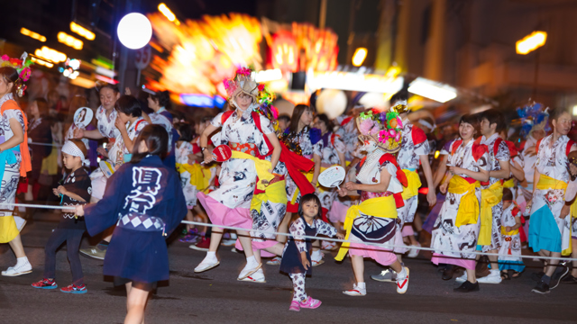
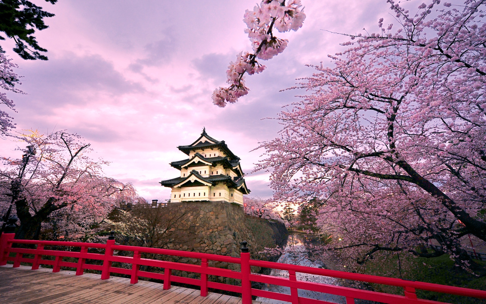
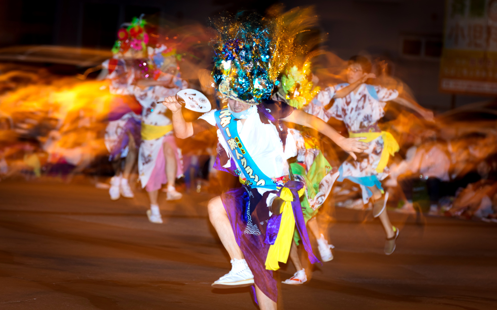

日本で最も知名度のある祭り、それが「青森ねぶた祭り」。巨大な山車が街を練り歩く、迫力のある祭りです。夜になると、山車に明かりが灯され大変華やかになり、その明るく鮮やかな光景に圧巻されます。お囃子とラッセーラーという掛け声とともに踊る跳人(ハネト)たちがさらにねぶた祭りを盛り上げてくれます。オフィシャルサイトはボタンから！
”一生に一度は行きたい桜の名所”として有名な弘前公園。弘前さくらまつりは日本一の呼び声高い祭りです。国内はもちろん、海外からの観光客も数多く訪れます。弘前城をバックに美しい写真が撮れます。約2600本もの桜が咲き誇る想像をはるかに超える美しい光景があなたを迎えます。
私のおすすめの青森県の料理をランキング形式でご紹介します！
八戸せんべい汁
のっけ丼
アップルパイ